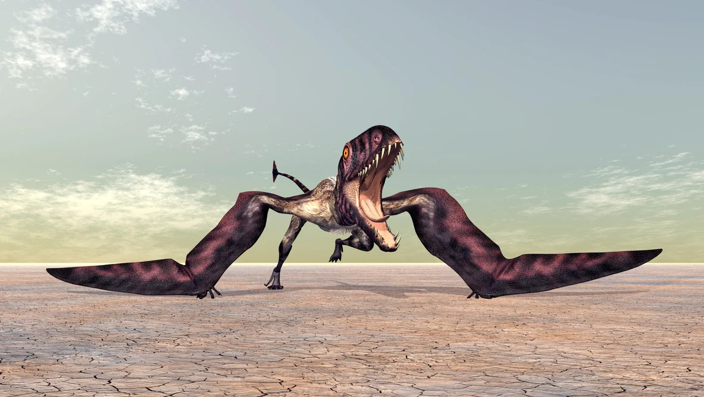
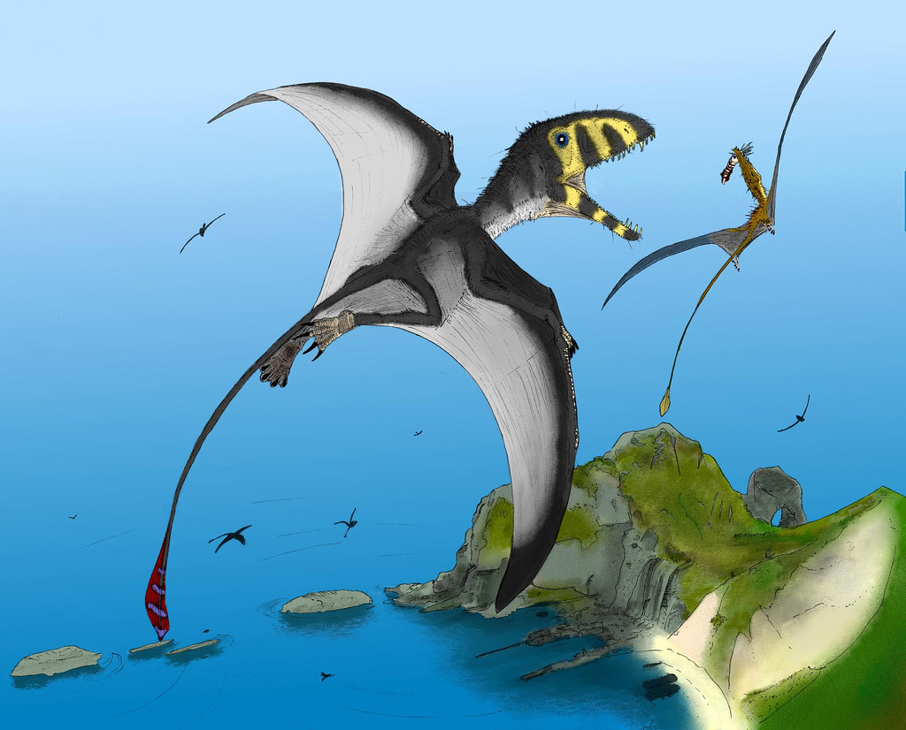
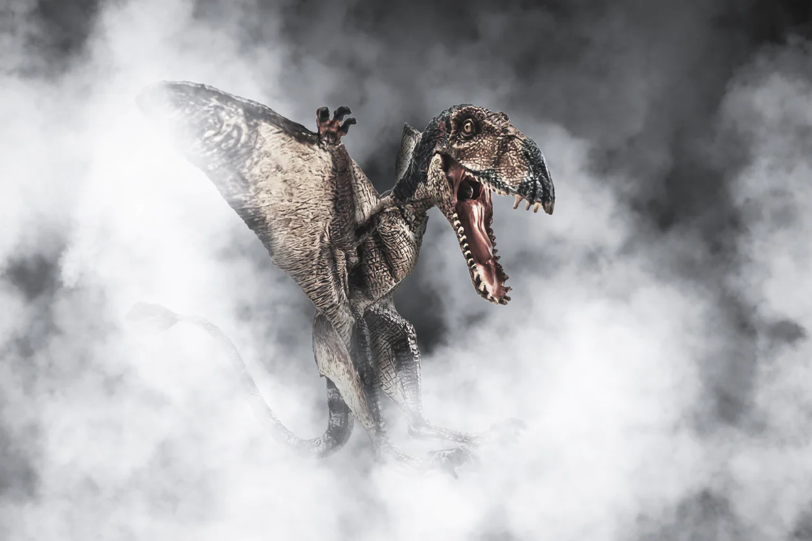
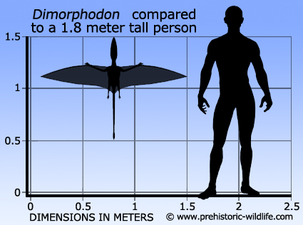
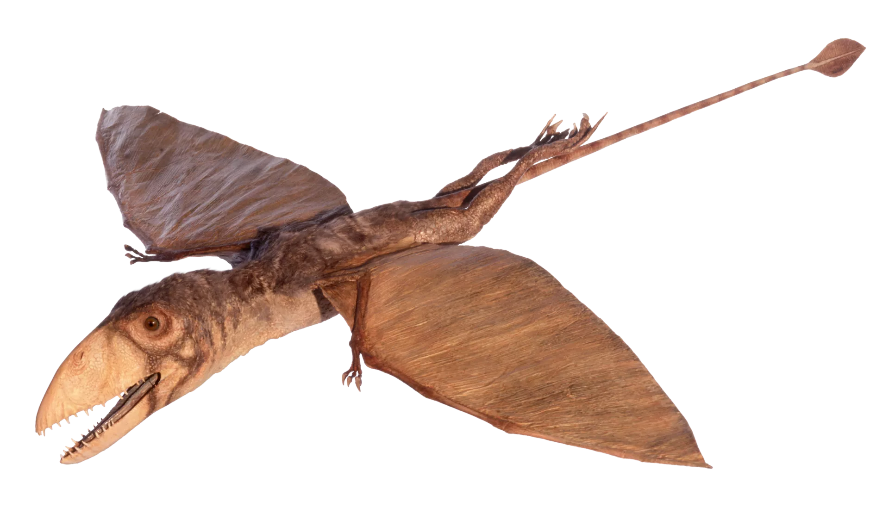
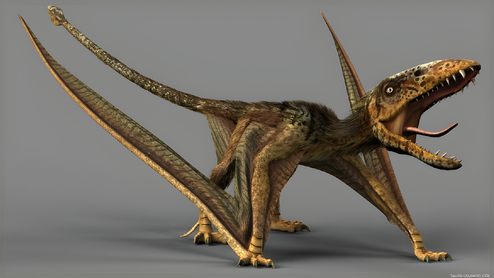
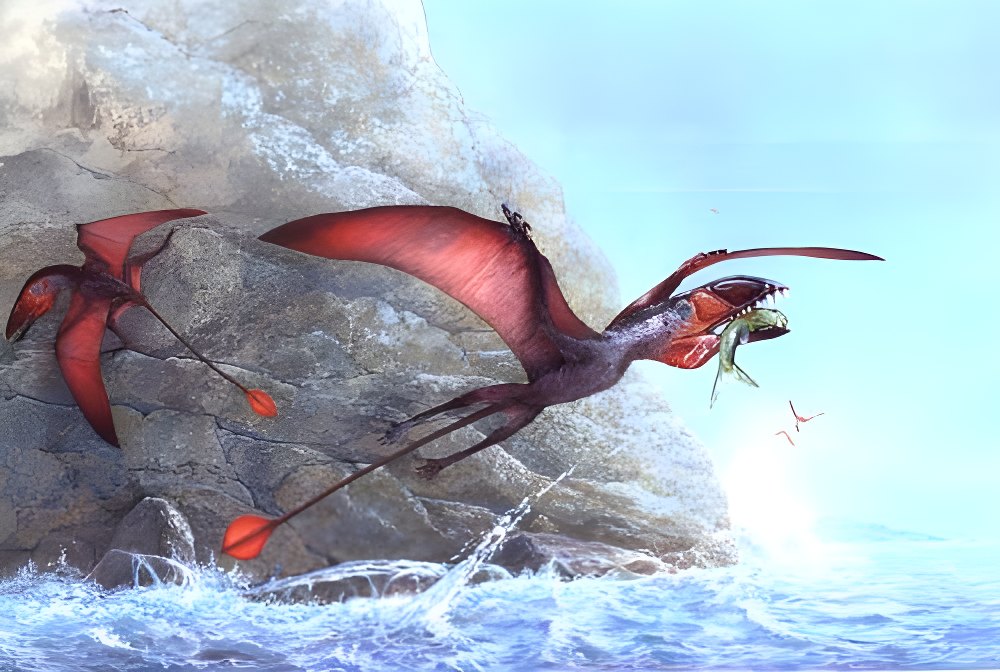
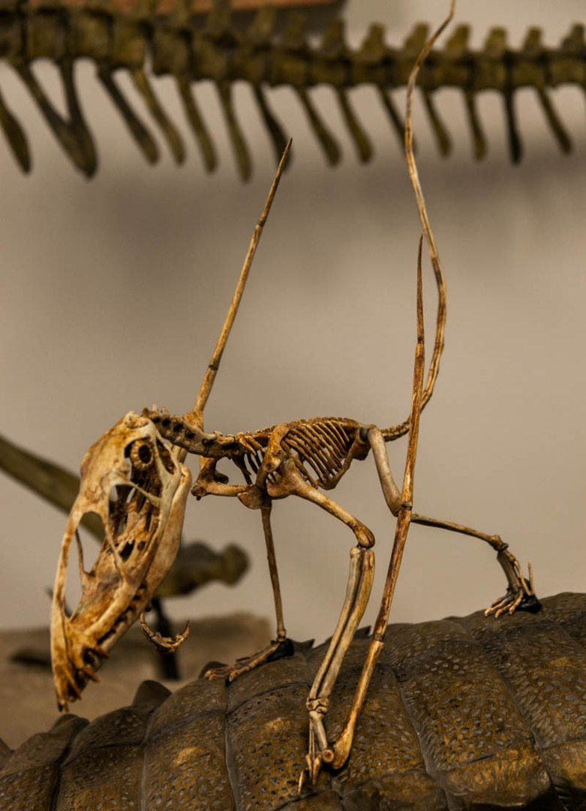
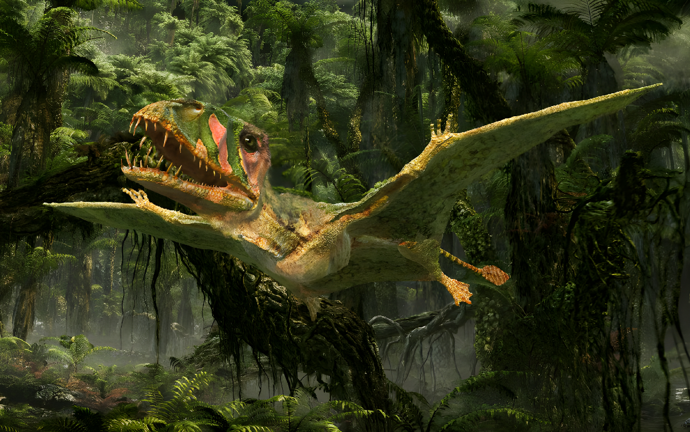

Dimorphodon
Dực Long nhiều răng kỷ Jura
Tổng quan
Kỷ
Jurassic
Họ
Dimorphodontidae
Chi
Dimorphodon
Dài
1 m
Sải cánh
1.45 m
Thức ăn


Dimorphodon là một chi thằn lằn bay thuộc bộ Pterosauria, sống vào đầu kỷ Jura. Chúng có kích thước nhỏ và là một trong những loài Pterosauria được biết đến nhiều nhất.
Nguồn: wikipedia.org
Phân bố
Khu vực Châu Âu và Trung Mỹ.
Thông tin thêm về Dimorphodon
Kỷ nguyên
Dimorphodon là một chi của thằn lằn bay sống đầu kỷ Jura, khoảng 195 đến 190 triệu năm trước.
Phân bố
Dimorphodon là một trong những loài Pterosauria được biết đến rõ nhất, nhờ vào các hóa thạch được tìm thấy tại Anh, chúng được cho là đã từng sinh sống ở bờ các biển Châu Âu và Trung Mỹ.
Tên khoa học
Được đặt tên bởi nhà cổ sinh vật học Richard Owen năm 1859. Cái tên Dimorphodon theo tiếng Hy Lạp có nghĩa là răng hai dạng, ám chỉ thực tế là nó có hai loại răng khác biệt trong hàm, tương đối hiếm trong số các loài bò sát.
Kích thước
Dimorphodon có kích thước tương đối nhỏ, cơ thể của Dimorphodon trưởng thành dài 1 mét (3.3 ft), với sải cánh 1.45 mét (4.6 ft).
Ngoại hình
Cấu trúc cơ thể của Dimorphodon thể hiện nhiều đặc điểm nguyên thủy với một ổ não rất nhỏ, và đôi cánh ngắn tương xứng. Cổ ngắn nhưng khỏe và linh hoạt, và có thể có một túi màng ở mặt dưới. Các đốt sống có các lỗ thoát khí, thông qua các lỗ đó túi khí có thể tiếp cận với phần rỗng bên trong. Đuôi của Dimorphodon dài bao gồm ba mươi đốt sống. Phần cuối tận cùng của đuôi có thể sinh ra một cánh đuôi giống chiếc lá.
Dimorphodon có một hộp sọ lớn, cồng kềnh, chiều dài xấp xỉ 23 cm, trọng lượng của Dimorphodon bị giảm đi do các khe hở lớn ngăn cách với nhau, bởi các vách ngăn xương mỏng. Mặt trước của hàm trên có bốn hoặc năm chiếc răng nanh, tiếp theo là một số răng nhỏ hơn không xác định, bởi hàm trên của tất cả các mẫu vật đều bị hư hại ở phần phía sau. Hàm dưới có năm chiếc răng dài hơn và ba mươi đến bốn mươi chiếc răng nhọn nhỏ, dẹt, hình mũi mác.
Chế độ ăn và săn mồi
Dimorphodon có thể có một chế độ ăn uống khá phức tạp. Ban đầu người ta cho rằng nó ăn côn trùng. Sau đó, người ta thường miêu tả nó như một loài thú ăn thịt, nói chính xác là ăn cá. Các nghiên cứu cơ sinh học ủng hộ ý tưởng Dimorphodon là động vật ăn sâu bọ. Bởi Dimorphodon có một hệ thống cơ hàm tiên tiến chuyên dùng cho phương pháp chụp và giữ. Hàm có thể đóng lại cực kỳ nhanh chóng, nhưng với lực hoặc sự xâm nhập của răng tương đối ít. Điều này, cùng với hộp sọ ngắn và cao và răng cửa dài, nhọn cho thấy Dimorphodon là một loài ăn côn trùng. Tuy nhiên đôi khi nó cũng có thể ăn cả động vật có xương sống nhỏ, và xác động vật.
Cho đến nay cuộc chiến để xác định giữa việc Dimorphodon loài ăn côn trùng, hay là loài động vật ăn thịt có xương sống vẫn chưa có hồi kết.
Khám phá
Hóa thạch của loài động vật này lần đầu tiên được phát hiện bởi nhà tiên phong nổi tiếng về cổ sinh vật học, Mary Anning. Phần còn lại được thu thập từ Lyme Regis ở Dorset vào năm 1828. Khu vực này cũng tiết lộ nhiều hóa thạch khác từ Kỷ Jura sớm, từ một Di sản Thế giới có tên là Bờ biển kỷ Jura. Mẫu vật chỉ được đặt tên và mô tả chính xác bởi Sir Richard Owen vào năm 1859, trên cơ sở hai hóa thạch khác từ cùng một địa phương. Trước đó nó đã được William Buckland đưa vào chi Pterodactylus với tên gọi Pterodactylus macronyx.
Khả năng bay lượn
Giống như nhiều loài pterosaurs khác, Dimorphodon từng được coi là loài có khả năng bay cao, và giỏi tương tự như loài chim biển. Tuy nhiên, nhiều nghiên cứu gần đây cho thấy con vật này thực sự là một kẻ bay khá kém, đôi cánh của nó ngắn so với cơ thể và bộ xương của nó khá khỏe, nên rất ít khả năng bay lướt. Trong cuộc sống, Dimorphodon có lẽ dựa vào những chuyến bay ngắn giống như những con gà và chim gõ kiến hiện đại, chúng không thể bay quãng đường dài và có lẽ chỉ bay lên không trung như một biện pháp cuối cùng. Ví dụ như thoát khỏi truy đuổi kẻ thù to lớn trong cuộc chiến sinh tồn chẳng hạn.
Nguyên nhân Dimorphodon có khả năng bay không tốt là một đặc điểm đã phát triển trong quá trình tiến hoá, chứ không phải do tổ tiên nguyên thủy của chúng, bởi vì những loài pterosaurs trước đó như Preondactylus đều có khả năng bay lượn rất giỏi.